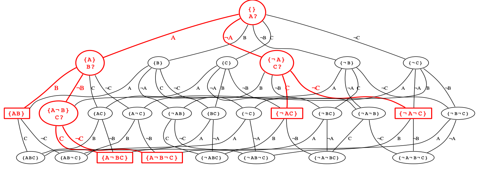
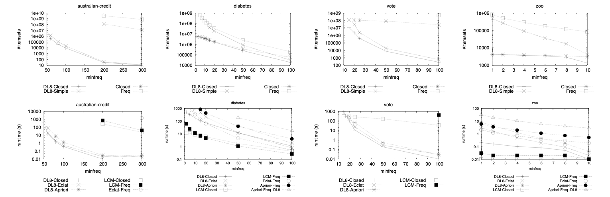

- 20 個中 9 個で有意に上回る葉の最小データ数を同じにしたとき、DL8 のテスト精度が J48 より有意に高かったデータの数（剪定の有無どちらでも）。有意に低かったのは 1 個だった。
- 格子の辺の数に比例する時間アイテム集合の束（格子）が手元にあれば、最適な木はその辺の数に比例する時間で取り出せる。計算の負担になるのは、格子を作る計算とそれを保存するメモリである。
- 既定の J48 には 7 個で負けるJ48 を既定の設定（葉の最小データ数 2）で動かすと、20 個中 7 個で J48 のテスト精度が有意に高かった。ただし DL8 の木はほぼすべてのデータでずっと小さかった。
貪欲な決定木学習が条件を満たす木を見つけられなくても、そのような木がないとは言えない
C4.5 などの決定木学習は根から順に、情報利得などの基準で良さそうな分岐を 1 つずつ選ぶ。この方法で「各葉が 10 件以上のデータを含み、誤りが最も少ない木」が見つからなかったとしても、そのような木が存在しないとは言えない。基準がその木に向いていなかっただけかもしれない。最適な決定木を求める問題は NP 困難で、それまで実データで計算しようとする試みはほとんどなかった。
論文は厳密なアルゴリズムの利点を 2 つ挙げる。研究の面では貪欲な学習器の結果を真の最適値と比べる基準になる。応用の面では、貪欲法では見つからない木を見つけられる。論文の例では、2 クラスのデータで根の候補 A の情報利得が 0.33、B が 0.26 なので、貪欲法は A を根に選ぶ。ところが葉の最小データ数を 10 としたときの最適な木は B を根にもつ。データ中の例の割合によって、貪欲法は最適でない形の木に誘導されてしまう。
欲しい木を、経路への局所制約、木全体への制約、辞書式の順位の 3 つでクエリとして書く
属性はすべて二値とし、名義属性は値ごとの二値属性に直す。各例を、値が 1 の属性 \(i\) と値が 0 の属性の否定 \(\neg i\) からなるアイテムの集合（トランザクション）とみなす。すると決定木の各節点に届く例は、根からその節点までの分岐をまとめたアイテム集合 \(I\) で表せる。たとえば根で B を、B = 0 の側で C を調べる木の葉は \(\{B\}\)、\(\{\neg B, C\}\)、\(\{\neg B, \neg C\}\) である。葉 \(I\) の誤りはそこに届いた例の数 \(\mathrm{freq}(I)\) から多数派のクラスの例の数を引いたものになる。
クエリは 3 つの部分からなる。
- 局所制約 \(p(I)\)：木のすべての経路 \(I\) が満たすべき条件。基本は葉の最小データ数 \(\mathrm{freq}(I) \ge \mathit{minfreq}\) である。\(p\) は反単調（\(I\) が満たせば、その部分集合も満たす）でなければならない。
- 全体制約 \(q(T)\)：訓練データでの誤り \(e(T)\)、未知のデータでの誤りの推定値 \(ex(T)\)、節点の数 \(\mathrm{size}(T)\)、深さ \(\mathrm{depth}(T)\) に上限を置く（省略してもよい）。
- 順位：\([r_1(T), \dots, r_n(T)]\) を辞書式に比べて最小の木を出力する。少なくとも誤り（\(e\) または \(ex\)）と大きさを含める。
たとえば「各葉が \(\mathit{minfreq}\) 件以上の例を含む木のうち、誤りが最も少なく、その中で最も小さい木」は \(p = (\mathrm{freq}(I) \ge \mathit{minfreq})\)、順位 \([e(T), \mathrm{size}(T)]\) と書ける。\(ex(T)\) には C4.5 の剪定で使う誤りの推定値（葉ごとの罰則を足したもの）を使えるので、剪定後の C4.5 の基準で最適な木も求められる。C4.5 の結果から大きさと誤りの上限を決め、それ以下で最も小さい木を探すこともできる。
左右の部分木は独立に最適化できるので、アイテム集合ごとに最適な部分木を一度だけ計算して保存する
DL8 の正しさは決定木の左の枝と右の枝を互いに独立に最適化できることにもとづく。根でアイテム \(i\) を調べる木が最適なら、左の部分木は \(I \cup \{i\}\) に届く例だけで最適な木、右の部分木は \(I \cup \{\neg i\}\) で最適な木でなければならない。制約が葉の最小データ数だけで、順位が誤りだけの最も簡単な場合、再帰は次の形になる（解説者が論文の Algorithm 1 から書き下した式）。
大きさや深さの制約があるときは、許される大きさ \(s\) と深さ \(d\) の組ごとに最適な木を返す。例がすべて同じクラスなら、それ以上分けても誤りは減らないので再帰を止める。局所制約を満たさないアイテム集合は、反単調性からその上位集合も木に現れないので、そこで探索を打ち切る。計算した結果はアイテム集合ごとに保存する。同じアイテム集合には別の順序の分岐でもたどり着くので（\(\{A, B\}\) には「A のあと B」でも「B のあと A」でも届く）、同じ部分木を二度計算せずに済む。保存するのは根の分岐と誤りなどの統計量だけでよく、部分木は子のアイテム集合の結果からたどって復元できる。

木に現れうるアイテム集合だけを数え、例の集合が同じアイテム集合は閉包でまとめる
束が手元にあれば、DL8 は束の辺の数に比例する時間で最適な木を取り出せる。時間がかかるのはデータを走査して頻度を数える部分なので、論文は頻度の求め方を 4 通り比べた。
- DL8-Simple：再帰の途中で必要になったアイテム集合の頻度を、その都度データを走査して求める。
- Apriori-Freq+DL8：頻出アイテム集合をすべて先に列挙して trie に保存し、その上で DL8 を動かす。ただし木には決して現れないアイテム集合も数えてしまう。たとえば \(\{A\}\) が頻出でも \(\{\neg A\}\) が頻出でなければ、A で分ける木は制約を満たさない。
- DL8-Apriori、DL8-Eclat：木に現れうるかどうか（relevancy）を反単調な制約として定義し、頻出アイテム集合の探索の中で枝刈りに使う。論文は、この制約を満たす集合が DL8-Simple の保存する集合とちょうど一致することを示している。
- DL8-Closed：例の集合 \(t(I)\) が同じなら最適な部分木も同じなので、結果をアイテム集合 \(I\) ではなくその閉包 \(i(t(I))\) で索引する。保存する結果の数は他のどの方法よりも多くならない。
DL8-Closed がいつも最も速く、計算の限界を決めたのは時間よりもアイテム集合を保存するメモリだった
実験は UCI のデータ 20 個で行った。数値の属性は Weka の教師なし離散化で 4 区間に分けてから二値化した（属性の数は 13〜3,466 個）。1,500 秒を超えた実行は打ち切った。保存するアイテム集合の数は、閉包でまとめて relevancy で枝刈りした場合がどのデータでも最も少なかった。頻出アイテム集合の数は多くの場合、妥当な時間やメモリでは計算も保存もできないほど多い。DL8-Closed は DL8-Apriori と DL8-Eclat よりつねに速く、relevancy による枝刈りをした方法は元の頻出アイテム集合の探索よりたいてい速かった。
一方で、ionosphere や splice のように属性が多いデータでは、最小サポート 25% 未満で動いたのは DL8-Closed だけで、それでも 10% 未満では動かなかった。論文の結論でも、問題は実行時間より、大量のアイテム集合を保存するのに要るメモリだとしている。

同じ最小頻度なら DL8 の木は J48 よりテスト精度が高いことが多く、全探索がいつも過学習を招くわけではない
層化 10 分割交差検証で、DL8-Closed と J48（Weka の C4.5）を比べた。最小頻度はデータごとにメモリに収まる最も低い値まで下げた。DL8 では誤り \(e\)（剪定なし）と推定誤り \(ex\)（剪定あり）をそれぞれ最小にし、J48 も剪定ありとなしの両方で動かした。検定は補正した両側 t 検定（有意水準 5%）である。
同じ最小頻度では、剪定の有無にかかわらず DL8 の木のほうが訓練精度が高かった。テスト精度では、どちらの場合も 20 個中 9 個で DL8 が有意に高く、有意に低かったのは 1 個だけだった。たとえば剪定ありの場合、mushroom では 0.92 に対して 0.97、segment では 0.73 に対して 0.83、vehicle では 0.59 に対して 0.67 だった（J48、DL8 の順）。剪定後の DL8 の木は J48 の木より平均で 1.5 倍大きいが、DL8 が有意に上回ったデータでは節点が 3〜9 個多いだけだった。J48 の木が小さいのは、制約を破らずには分けられない、誤りを少し含む葉を作るためである。論文は、小さい木がいつも望ましいわけではないという先行研究の知見を裏づけると述べている。
ただし、J48 を既定の最小頻度 2 で動かすと、事前に離散化したデータでは 20 個中 7 個で J48 のほうが有意に高く、離散化しない元のデータではさらに 3 個で J48 が上回った。それでも DL8 の木はほぼすべてのデータでずっと小さく、論文は、大きさと精度のトレードオフがより良い木を DL8 で求められると述べている。J48 の平均の大きさを DL8 の大きさの上限にした比較では、6 個のデータのどれでも有意な差はなかった（例：g-credit で J48 が 0.70、DL8 が 0.72）。
頻出パターン探索と動的計画法を結びつけた DL8 は、のちの動的計画法と分枝限定法による最適決定木の出発点になった
- 解き方：二値の特徴量の上で、アイテム集合（＝木の経路）ごとに最適な部分木を保存する動的計画法。分枝限定法の上下界は使わない。
- 目的と制約：訓練誤り、C4.5 式の推定誤り、大きさ、深さを辞書式に並べた順位を最小にする。葉の最小データ数などの反単調な制約で探索を絞る。
- 限界：アイテム集合をすべて保存するのでメモリを大量に使い、属性が多いデータでは最小頻度を低くできない。論文は、DL8 が使う情報をもっと小さく表す方法を今後の課題に挙げている。
- その後：同じ著者らの DL8.5（2020）は、このキャッシュつきの探索に分枝限定法の上下界を加えた。MurTree などの動的計画法の系統もこの考え方の上にある。
@inproceedings{nijssen2007mining,
title = {Mining Optimal Decision Trees from Itemset Lattices},
author = {Nijssen, Siegfried and Fromont, Elisa},
booktitle = {Proceedings of the 13th ACM SIGKDD International Conference on Knowledge Discovery and Data Mining},
pages = {530--539},
publisher = {ACM},
year = {2007},
doi = {10.1145/1281192.1281250}
}
ページの数値と図は HAL に置かれた著者稿（hal-00372011）による。ACM の出版版の本文は照合していない。書誌は Crossref で確認した。